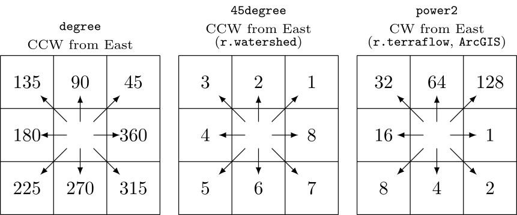
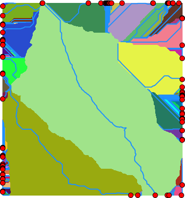

r.lfp also supports the taudem format, which is used by TauDEM's D8FlowDir. This format is not auto-detected because it shares the same encoding range of the 45degree format. Additionally, the module can accept any integer encodings with the custom format and encoding option, which uses eight numbers for E, SE, S, SW, W, NW, N, and NE. For example, to encode the 45degree format using this method, one can use format=custom encoding=8,7,6,5,4,3,2,1.
Create the longest flow path for one outlet:
# set computational region
g.region -ap raster=elevation
# calculate drainage directions using r.watershed
r.watershed -s elevation=elevation drainage=drain
# extract draining cells
r.mapcalc ex="dcells=if(\
(isnull(drain[-1,-1])&&abs(drain)==3)||\
(isnull(drain[-1,0])&&abs(drain)==2)||\
(isnull(drain[-1,1])&&abs(drain)==1)||\
(isnull(drain[0,-1])&&abs(drain)==4)||\
(isnull(drain[0,1])&&abs(drain)==8)||\
(isnull(drain[1,-1])&&abs(drain)==5)||\
(isnull(drain[1,0])&&abs(drain)==6)||\
(isnull(drain[1,1])&&abs(drain)==7),1,null())"
r.to.vect input=dcells type=point output=dcells
# delineate all watersheds using r.hydrobasin
r.hydrobasin dir=drain outlets=dcells output=wsheds nproc=$(nproc)
# calculate all longest flow paths
r.lfp dir=drain outlets=dcells lfp=lfp ocol=outlet_cat nproc=$(nproc)
# or using a custom format for r.watershed drainage (8-1 for E-NE CW)
r.lfp dir=drain format=custom encoding=8,7,6,5,4,3,2,1 outlets=dcells lfp=lfp2 ocol=outlet_cat nproc=$(nproc)
